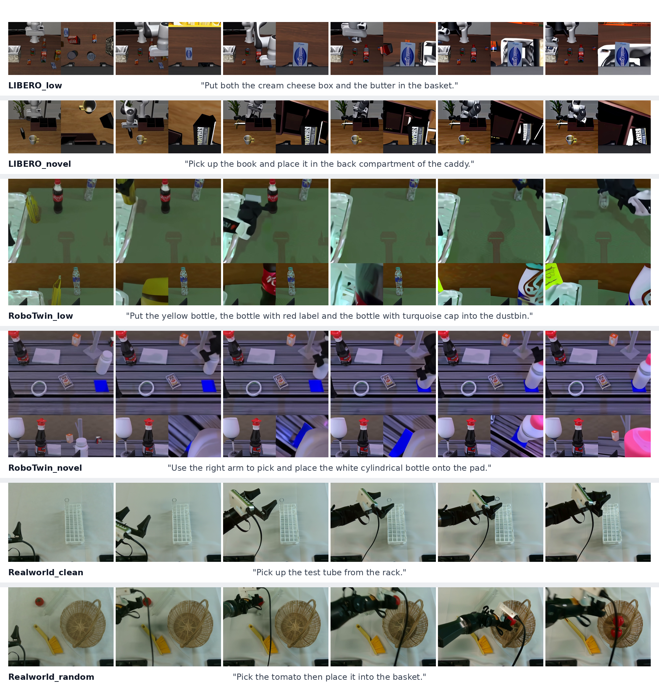

Vid2WAM: Distilling Video Diffusion Priors into World Action Models
1 Fudan University 2 The Chinese University of Hong Kong, Shenzhen 3 Shanghai Innovation Institute
- Video-Foundation-Model-to-WAM Distillation: We rethink the source of future supervision for World Action Models and formulate a video-foundation-model-to-WAM distillation framework, using generated futures from video foundation models as direct supervision beyond recorded target-task expert trajectories.
- Dual-Channel, Source-Aware Transfer: We introduce a dual-channel, source-aware transfer strategy that jointly distills future visual dynamics and IDM-inferred actions, with residual adapters reducing interference from noisy pseudo-actions.
- Generalization with Efficient Inference: We demonstrate in simulation and real-world experiments that Vid2WAM improves expert-demonstration efficiency and novel-task generalization, while retaining efficient student-only inference.
Abstract
World Action Models (WAMs) improve robot policy learning by jointly modeling future visual dynamics and actions. However, their scalability and generalization remain constrained by their reliance on costly expert demonstrations. We challenge this by asking whether future supervision for WAMs must originate from target-task expert trajectories. In this paper, we propose Vid2WAM, an offline distillation framework that transfers visual diffusion priors from a large video foundation model into a compact WAM student. Given an observation and language instruction, Vid2WAM distills supervision through two complementary channels: task-conditioned future rollouts directly supervise the student's future prediction branch, while an inverse dynamics model recovers embodiment-specific pseudo-actions for action learning. To robustly integrate synthetic and real supervision, we introduce source-aware residual action adaptation that learns source-specific corrections around a shared action backbone and mitigates interference from noisy pseudo-actions. During inference, both the video teacher and inverse dynamics model are discarded, leaving only the WAM student for efficient deployment. Simulation and real-world experiments demonstrate that Vid2WAM improves novel-task generalization and data efficiency under limited expert demonstrations while preserving low-latency inference.
Framework

Simulation Results
Vid2WAM consistently improves task success in low-data and novel-task settings. All charts below visualize the values reported in the paper tables; success rate is in percent and higher is better.
RoboTwin 2.0 · Novel Tasks
15 unseen tasks only
LIBERO · Average Success
Four task suites
LIBERO-Plus · Robustness
Overall across seven perturbations
Real Robot · Novel Tasks
20 trials per task
Inference Latency
Milliseconds per action chunk · RTX 4090
Qualitative Future Predictions
From identical initial observations and language instructions, Vid2WAM more often predicts task completion beyond intermediate grasping or opening steps.

Teacher-Generated Rollouts
Six representative rollouts cover LIBERO, RoboTwin, and real-world settings across low-data, novel-task, clean, and randomized conditions.

Real-World Experiments
Vid2WAM is evaluated on nine contact-rich bimanual tasks, including novel object-level and behavior-level tasks without target-task expert trajectories.